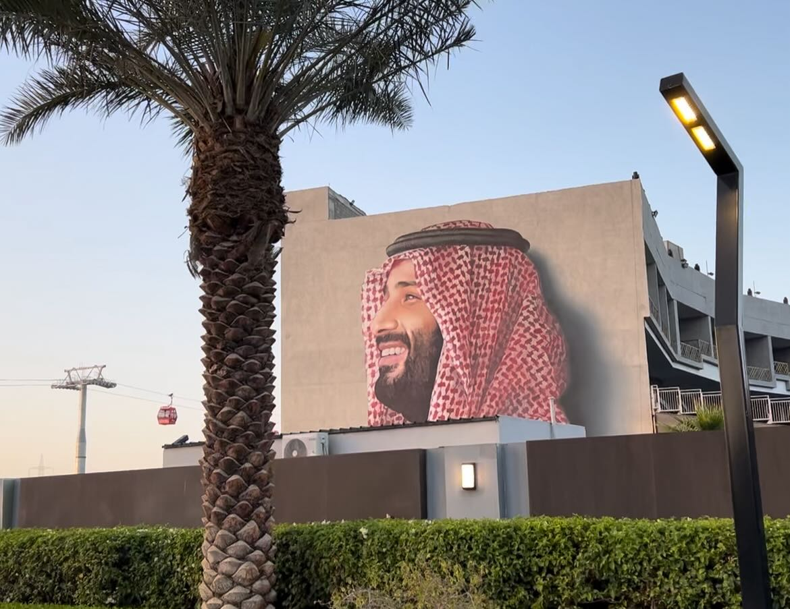
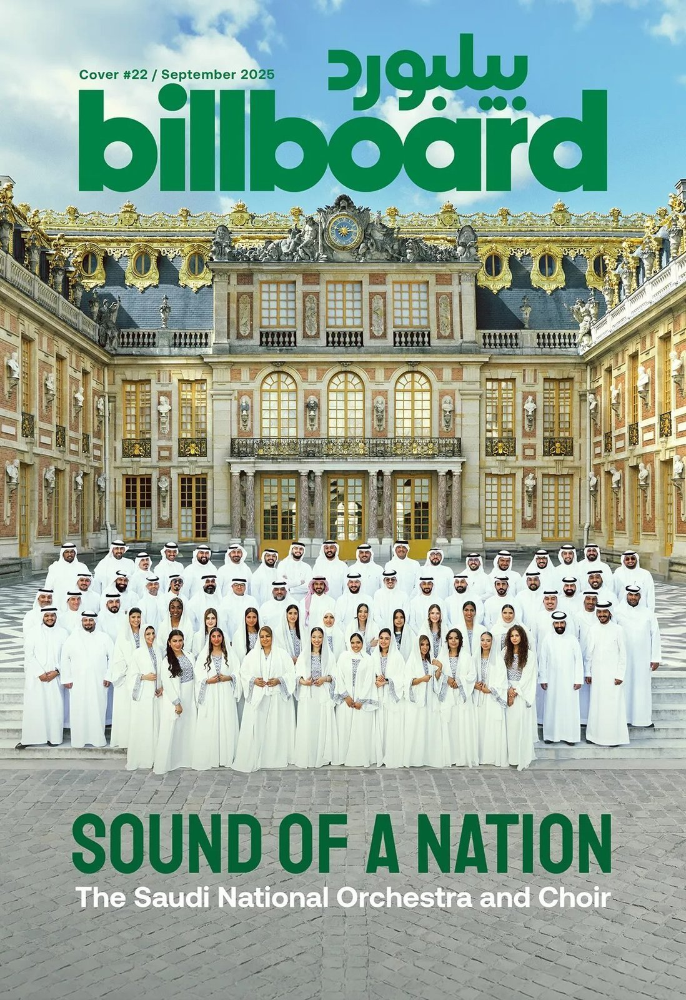
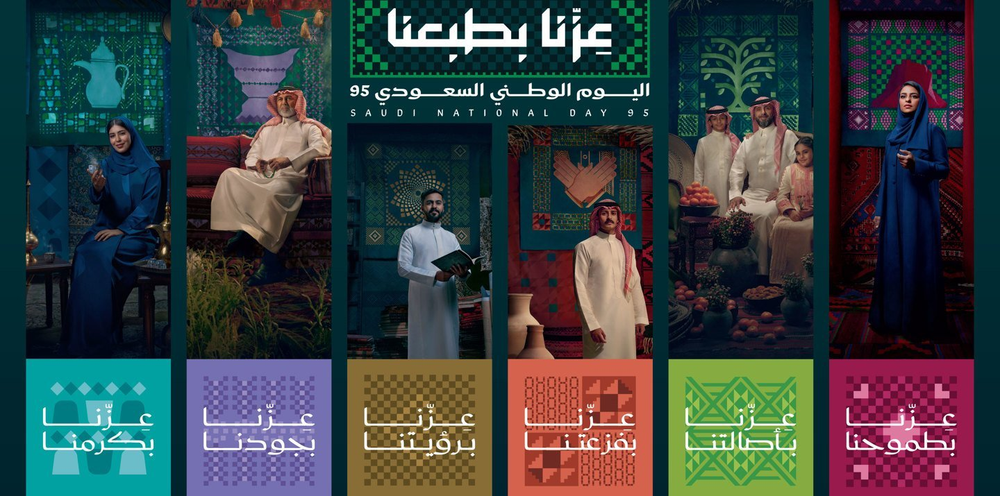

사우디아라비아는 지난 9월 23일 내셔널 데이를 기념했다. 올해는 서기로 건국 93주년이자, 이슬람력(히즈리력) 기준으로 제95회 내셔널 데이에 해당한다. 이날은 1932년 압둘아지즈 이븐 압둘 라흐만 알 사우드(Abdulaziz ibn Abdul Rahman Al Saud)가 네지드(Najd)와 히자즈(Hejaz)를 통합해 오늘날의 사우디아라비아 왕국(Kingdom of Saudi Arabia)을 공식 선포한 데서 비롯됐다. 내셔널 데이는 단순한 국경일을 넘어 국민 모두가 국가 정체성과 자부심을 확인하는 중요한 날로 자리매김해 왔다.
거리의 열기와 청년 세대
올해 내셔널 데이 역시 전국적으로 뜨거운 열기를 보여줬다. 기업과 공공기관은 조기 퇴근을 했고, 저녁 무렵 도시의 거리와 광장은 국기를 흔드는 군중과 차량 퍼레이드로 가득 찼다. 밤새 이어진 음악과 함성은 마치 거대한 스포츠 이벤트를 방불케 하며 2002년 한일월드컵 같은 분위기를 연상시켰다. 일부 젊은 운전자들의 과격한 퍼포먼스로 인해 외출을 자제하라는 권고가 나올 정도였다.
특히 사우디 전체 인구의 ⅔ 이상을 차지하는 청년층이 축제의 주역으로 활약했다. 그들은 국가에 대한 자부심을 거리에서 마음껏 드러내며 '사우디의 미래를 세계로 이끌 세대'라 자임했다. 과거 아랍 청년 여론조사에서도 사우디 청년의 90% 이상이 빈 살만 왕세자를 강력한 지도자로 평가한 바 있는데 실제로 만나본 청년들 역시 그의 리더십과 '비전 2030'에 대한 지지를 확연히 드러냈다. 이들은 아시안게임 유치와 같은 국제적 성과를 자신들의 미래와 직결된 일처럼 기뻐했으며 거리 곳곳에서도 자국의 위상을 세계로 뻗어나가겠다는 자신감이 고스란히 느껴졌다.

▲ 리야드 시내 건물 외벽의 빈 살만 왕세자 이미지 — 출처: 통신원 촬영
비전 2030의 추진 속에서 사우디는 최근 국제 무대에서도 성과를 거두었다. 2024년 말에는 2034 FIFA 월드컵 개최국으로 확정됐고, 아시안게임 등 국제 스포츠 대회에서 다수의 메달을 획득했다. 축구 대표팀은 아시안컵에서 세 차례 정상에 올랐으며, 2022년 월드컵에서는 아르헨티나를 꺾는 이변을 만들어내기도 했다. 이런 성과들은 청년 세대의 자긍심을 더욱 고취시켰다.
문화적 확장과 글로벌 시각
내셔널 데이는 거리 퍼레이드를 넘어 문화와 예술을 통한 국가 정체성의 표현으로 확장됐다. 특히 사우디 내셔널 오케스트라와 합창단은 내셔널 데이를 전후해 활발히 공연을 이어갔다. 9월 23일을 앞두고 프랑스 베르사유 궁전에서 열린 공연은 사우디가 세계와 음악이라는 언어로 대화하기 시작했음을 보여준 상징적인 장면이었다. 이들은 사우디 전통가요와 현대적 편곡을 결합해 세계 주요 도시에서 공연하며 각 지역 문화와 어우러지는 무대를 선보였다.

▲ 《빌보드 아라비아(Billboard Arabia)》 9월호 표지 — 출처: 《빌보드(Billboard)》
또한 내셔널 데이를 앞두고 대규모 광고 캠페인도 전개됐다. FGC(First Gulf Company)가 '위 셰이프 더 퓨처(We Shape the Future)'라는 슬로건으로 소셜미디어 중심 캠페인을 선보였고, '사우디 내셔널 데이 95(Saudi National Day 95)'라는 공식 광고 캠페인도 공개됐다. 정부는 올해 내셔널 데이의 공식 비주얼 아이덴티티를 발표하며 슬로건을 '프라이드 인 아워 네이처(Pride in Our Nature)'로 정했다. 전통 문양을 현대적으로 재해석한 로고와 여섯 가지 핵심 가치(관대함, 진정성, 야망, 연대, 비전 2030, 환대)를 상징하는 일러스트가 함께 공개됐고, 소셜미디어 확산을 위한 공식 해시태그(#SaudiNationalDay95)도 지정됐다. 이처럼 민간 광고와 국가 차원의 브랜드 전략이 결합되며 내셔널 데이는 단순한 기념일을 넘어 현대적 국가 브랜드 구축의 장으로 확장됐다.
▲ 제95회 사우디 내셔널 데이 공식 홍보 영상 — 출처: 유튜브 계정(@TDF_SA)

▲ 2025 내셔널 데이 비주얼 아이덴티티 디자인 — 출처: 사우디 엔터테인먼트청
해외 언론들도 사우디 내셔널 데이를 단순한 국경일이 아니라 문화적 현상으로 평가했다. 음악을 통한 세계와의 소통, 전통과 현대가 어우러지는 축제, 한 달간 이어지는 문화·상업 시즌, 그리고 '비전 2030'과 연결된 국가 브랜드 전략이라는 점에 주목한 것이다. 한국 언론도 사우디 내셔널 데이를 단순한 기념일이 아니라 '비전 2030' 성과와 국제 협력을 보여주는 무대로 해석하며 한국 기업과의 협력 사례를 강조했다. 특히 "삼성·LG·두산·한화 등 주요 기업이 네옴(NEOM) 프로젝트에 참여하고 한국항공우주청(KASA)과 사우디 우주청이 우주개발 협력 양해각서(MoU)를 체결하는 등 협력 분야가 확대되고 있다."고 전했다.
사우디는 이제 2032년 건국 100주년을 향한 여정에 들어섰다. 정부는 국가적·문화적 차원에서 전례 없는 행사들을 계획하고 있으며 내셔널 데이는 앞으로도 그 집약적인 장으로써 세계인의 시선을 끌게 될 것이다. 앞으로 사우디가 국가 이미지를 어떻게 만들어갈지 주목된다.
사진 출처 및 참고자료
통신원 촬영
Encyclopaedia Britannica. (n.d.). The Kingdom of Saudi Arabia. Encyclopaedia Britannica, Inc.
《Arabian Business》 (2018. 5. 8). Saudi Crown Prince wildly popular among Arab youth, survey shows
《Arab News》 (2025. 8. 4). Saudi National Day theme, identity unveiled: Pride in Our Nature
FGC 홈페이지, https://fgc.sa
사우디 엔터테인먼트청(GEA), https://www.gea.gov.sa/en/media-center/news/nd95
《Billboard》 (2025. 9. 22). The Story of the Saudi National Orchestra and Choir: The Voice of a Nation
《Korea JoongAng Daily》 (2025. 9. 22). Saudi Arabia pushes forward with Korean ties on National Day
사우디 관광 개발 기금(@tdf_sa), 공식 홍보 영상 (YouTube)